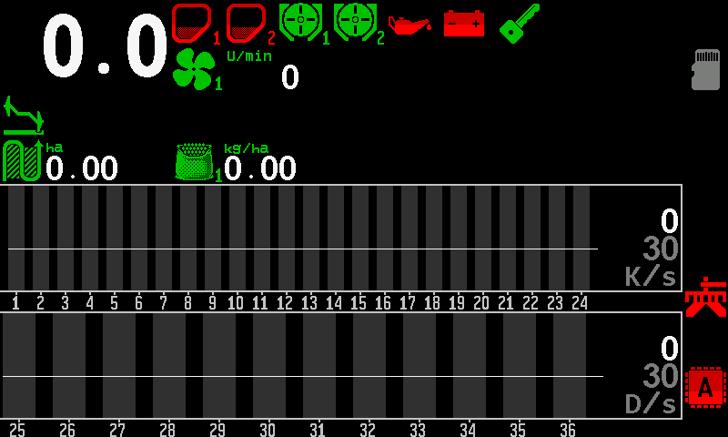

Der Startbildschirm
Was jeder Teil des Startbildschirms ist — Geschwindigkeit, Anzeigen, Fläche, Mengen, die Sektionsdiagramme — an einer stehenden Drillmaschine und an einem Einzelkornsägerät bei der Arbeit.
Der Startbildschirm ist der wichtigste Arbeitsbildschirm. Er zeigt die Diagramme der Sektionssensoren, die Zustandsanzeigen der Geräte und die wichtigsten Kennzahlen der Arbeit. Was er zeigt, folgt dem Profil: Jede dort eingetragene Gruppe von Sensoren und Geräten bekommt ihre Kacheln, ihre Säulen, ihr Mengenfeld.
Eine Drillmaschine mit Saatgut und Dünger

- Fahrgeschwindigkeit. In km/h. Meldungen zur Geschwindigkeit ersetzen die Zahl. Geschwindigkeit
- Behälter. Ein Symbol je Behältersensor, nummeriert. Rot — der Füllstand liegt unter dem Sensor. Behälter
- Dosiereinheiten. Drehung der Dosierwellen; das Symbol dreht sich, solange sich die Welle dreht. Dosiereinheit
- Motorsensoren. Öldruck, Batterieladung und Zündung des Gebläse-Antriebsmotors. Motorsensoren
- Uhr. Die Uhrzeit; das Feld trägt auch Meldungen. Uhr
- Speicherkarte. Wird angezeigt, solange eine microSD-Karte im Steckplatz steckt. Speicherkarte
- Gebläse. Das Gebläsesymbol und seine Drehzahl in U/min. Gebläse
- Spuranzeiger. Welcher Spuranzeiger-Arm abgesenkt ist. Spuranzeiger
- Fahrgassen-Durchgang. Der aktuelle Durchgang über der Zahl der Durchgänge im Rhythmus. Fahrgassen-Durchgang
- Fläche. Bearbeitete Hektar auf dem aktiven Feld. Fläche
- Produktmenge nach Masse. Die Menge von Produkt 1 in kg/ha. Produktmenge nach Masse
- Saatdiagramm. Eine Säule je Kornsensor; die weiße Linie ist die Überwachungslinie. Das Sektionsdiagramm
- Sektionsnummern. Die Nummer jeder Sektion unter ihrer Säule.
- Mengenfeld. Oben die gemessene Menge, darunter der Sollwert, hier in Körnern je Sekunde. Sollmenge ändern
- Gerätestellung. Hier ein rotes × — der Arbeitsstellungssensor antwortet nicht. Gerätestellung
- Düngerdiagramm. Die Sektionen 25 bis 36 mit eigenem Mengenfeld in Düngereinheiten je Sekunde.
- Aktuatorstörung. Mindestens ein Motor oder Fahrgassen-Aktuator befindet sich im Alarmzustand. Aktuatorstörung
Ein Einzelkornsägerät bei der Arbeit

- Fahrgeschwindigkeit. Hier gelb, weil sie am Prüfstand simuliert wird. Geschwindigkeit
- Behälter. Grün — Produkt über dem Sensor.
- Druck. Unterdruck oder Überdruck in kPa. Druck
- Fläche. Bearbeitete Hektar auf dem aktiven Feld.
- Aussaatmenge. Die tatsächliche Aussaatmenge in Tausend Körnern je Hektar. Aussaatmenge
- Speicherkarte.
- Sektionssäule. Grün — die Reihe sät innerhalb ihrer Toleranz. Säulenfarben
- Fehlstellenbalken. Gelbe Schraffur links an einer Säule: der Anteil der Fehlstellen in dieser Reihe.
- Doppelbelegungsbalken. Blaue Schraffur rechts an einer Säule: der Anteil der Doppelbelegungen.
- Solllinie. Die Sollmenge über alle Reihen.
- Toleranzmarken. Obere und untere Grenze der zulässigen Abweichung in jeder Säule.
- Mengenfeld. Oben die gemessenen Körner je Meter, darunter der Sollwert.
- Gerätestellung. Grün — abgesenkt, in Arbeit.
- Sektionsnummern.
Was jede Anzeige in allen ihren Zuständen bedeutet, steht unter Anzeigen; das Diagramm selbst — Linie, Marken, Farben — unter Das Sektionsdiagramm.
Was Sie vom Startbildschirm aus tun können
| Aufgabe | So geht es |
|---|---|
| Das Hauptmenü öffnen | „MENU“ oder mit zwei Fingern tippen |
| Die Sollmenge ändern | „PLUS“ / „MINUS“ — Sollmenge ändern |
| Die Produktausbringung sperren oder freigeben | „HOME“ gedrückt halten — Ausbringung von Hand sperren |
| Das Menü des Fahrgassen-Durchgangs öffnen | „BACK“ — Nächster Fahrgassen-Durchgang |
| Das Panel die Alarmschwelle setzen lassen | Doppeltippen, während ausgebracht wird — Alarmschwelle einstellen |
| Die Einstellungen eines Geräts öffnen | Sein Symbol oder seine Säule berühren und halten |
| Zum nächsten Arbeitsbildschirm wechseln | „HOME“ oder nach links wischen — Arbeitsbildschirme |
| Den zweiten Startbildschirm öffnen | Nach rechts wischen — Zweiter Startbildschirm |
Alle Tasten auf allen Bildschirmen: Tasten und Gesten.
Ihre Maschine tut etwas, das diese Seite nicht beantwortet? Schreiben Sie an support@agriwelt.com — es antwortet ein Ingenieur.